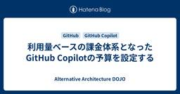

Alternative Architecture DOJO
https://aadojo.alterbooth.com/
オルターブースのクラウドネイティブ特化型ブログです。
フィード

利用量ベースの課金体系となったGitHub Copilotの予算を設定する
 4
4
Alternative Architecture DOJO
GitHub Copilot は6月1日から利用量ベース課金へ移行し、AI Credits による柔軟な予算管理が可能になります。管理者は月次予算やアラートを細かく設定でき、組織全体で安心して効率的に Copilot を活用できます。
6日前

ghas-bootcamp リポジトリで学ぶ GitHub Advanced Security ~Dependabot 編~
Alternative Architecture DOJO
こんにちは、エンジニアのみっつーです！ とても今更ですが、ghas-bootcamp という GitHub 公式のハンズオンリポジトリを使った GitHub Advanced Security 機能のおさらいをやっていきたいと思います。 github.com このリポジトリのハンズオン、個人的にはこれから GitHub Advanced Security をやっていきたい方や資格試験を受けに行く方には必ず一度通すことを勧めています。 とはいえ ghas-bootcamp リポジトリは既にアーカイブされているため（恐らく GitHub の UI も変わり、今後追従しないということの明示かと思われ…
6日前

Microsoft Fabricのしくみをもう一歩理解する - Tablesの中で何が起きているのか（Delta Lake入門）
Alternative Architecture DOJO
Microsoft Fabricを学びながら整理している第2回。今回はTablesに焦点を当てて、Delta Lakeの仕組みを図と実例で理解してみました
8日前
Azure Cosmos DB Shell で Azure Cosmos DB を簡単に操作する
Alternative Architecture DOJO
こんにちは！オルターブースの清島です。 2026年5月に、 Azure Cosmos DB Shell というオープンソースのツールがパブリックプレビューとしてリリースされました。 devblogs.microsoft.com 今回はこの Azure Cosmos DB Shell のクイックスタートや機能についてご紹介します。 （本記事は2026/5/26時点のパブリックプレビュー版の情報をもとに作成しています。） Azure Cosmos DB Shell の概要 Azure Cosmos DB のデータベースに対する操作が可能なコマンドラインインターフェース Bash ライクな使用感でコ…
12日前
"Conductor"でAIコーディングアシスタントのワークフローを管理する
Alternative Architecture DOJO
Microsoft Conductorの基本を、インストール手順からYAMLによるマルチエージェントワークフロー定義、CLI実行方法まで実例付きで解説。おみくじアプリの計画・実装・テスト自動化を通じて、GitHub CopilotやClaudeを活用したAIエージェント管理の魅力を紹介します。
13日前
Microsoft Fabricの最初の一歩 - OneLakeとLakehouseで理解する「データの置き場と流れ」
Alternative Architecture DOJO
Microsoft Fabricの基本を理解するために、OneLake・Workspace・Lakehouseの関係と、データの保存から分析までの流れをやさしく整理しました。
14日前
【Visual Studio】GitHub Copilot を使ったコミットメッセージ生成がカスタムインストラクションに対応しました！
Alternative Architecture DOJO
こんにちは！エンジニアのはっしーです！ 暑くなってきましたね。家庭菜園で育てているじゃがいもやピーマンは葉っぱが青々としげり、ミニトマトは実がつき始めました。 収穫が楽しみです。 さて今回は、Visual Studio 2026 18.6.0 で、GitHub Copilot のコミットメッセージ生成ルールを Visual Studio の設定ではなく .github/copilot-instructions.md で管理する方式に変わったので、その内容を紹介します。 チームやリポジトリごとに異なるルールがある場合でも、IDE 側の設定を切り替えずに運用しやすくなりました。ぜひ参考にしてみてく…
16日前
【入社エントリ】オルターブースに入社しました
Alternative Architecture DOJO
ご挨拶 はじめまして、オリビアです。 2026 年 4 月にオルターブースへ入社しました。 マイクロソフト製品が好きで、Microsoft MVP を Azure と Security のカテゴリで受賞しています。 これまでは SIer として、情シス支援を中心に Azure や Microsoft 365、Security まわりに関わってきました。 この記事では、これまでの経験と、オルターブースとのご縁、そして「なぜ入社したのか」を書いてみようと思います。 これまでの経験 私は最初から IT 一筋だったわけではありません。 大学に入ってから趣味でメイドのアルバイトを始めたのですが、思った以…
17日前
GitHub CLIで自作のエージェントスキルを発行する
Alternative Architecture DOJO
GitHub CLI v2.90.0 で追加された gh skill コマンドを使うことで、GitHub Copilot向けのエージェントスキルの検索・発行・インストールが簡単に行えるようになった。本記事では、著者が自作スキルを実際に gh skill publish で公開し、タグ作成・リリース生成・Immutable releases の設定など、発行に必要なプロセスを詳しく紹介。さらに、公開したスキルを gh skill install でインストールし、対象エージェント（GitHub Copilot）やスコープ（Global）を選択する流れも解説。従来のリポジトリクローン方式よりも、CLIによるスキル管理が大幅に効率化される点がポイント。
1ヶ月前
2026年7月実施：Microsoft 365 法人向け製品の価格改定について
Alternative Architecture DOJO
2026年7月に実施されるMicrosoft 365（法人向け）価格改定について解説します。
2ヶ月前
GitHub Copilot CLIでMicrosoft Foundryのモデルを利用する
Alternative Architecture DOJO
GitHub Copilot CLIでMicrosoft FoundryのBYOKモデル（例：GPT-5.4）を使う方法を実例付きで解説します。環境変数（PowerShell/Bash）設定、v1.0.32の前提、データプライバシー、Foundry Localの現状や注意点も網羅。
2ヶ月前
オンプレミスエンジニアが AI 時代のハイブリッドなインフラエンジニアを目指すならまずはこのあたりから考え始めてみてはどうか、という話 - Microsoft AI Tour Tokyo
Alternative Architecture DOJO
初めまして。1月に入社しました中山です。 私はこれまでオンプレミスを中心にインフラを触ってきました。 Azure を学び始めてまだ日が浅く AIやクラウドを活用したい気持ちはある しかし、何をどうしたら良いかはっきり見えない そんな状態で試行錯誤している最中です。 そのような立場で Microsoft AI Tour Tokyo 2026 に参加し、複数のセッションを聴講する中で 「すべてを理解できなくてもよいが、ここだけは押さえておくと今後が楽になる」 と感じた共通点がありました。 この記事で伝えたいこと オンプレミスエンジニアがAIの話題に触れると 難しそう 自分の専門外ではないか まだ自…
2ヶ月前
Microsoft AI Tour Tokyo 2026 に参加できなかったエンジニアへ - 開催後に投稿されたMicrosoft公式情報を探ってみた
Alternative Architecture DOJO
こんにちは！オルターブースの木村龍太郎です。2026/3/24 に東京で開催された Microsoft AI Tour 2026。私は都合により参加できませんでしたが、後日、Microsoft が資料を公開していることを知り、情報を探ってみました。この記事では、それらの情報を紹介するとともに、内容を少しピックアップしてみます。 基調講演 公式によるまとめ記事 AI Tour 26 Resource Center（GitHub リポジトリ） 1. AI ビジネスソリューション 2. クラウド & AI プラットフォーム 3. セキュリティ 気になったセッション まとめ 基調講演 www.yout…
2ヶ月前
Scrum Fest Fukuoka 2026に参加しました
Alternative Architecture DOJO
はじめに こんにちは！最近春が近づいてきており暖かくなってきましたね。今回は先日オンライン参加したScrum Fest Fukuoka 2026のレポートを書きます🌸 Scrum Fest Fukuoka 2026とは スクラムフェス福岡は、今年で第4回を迎えるアジャイルコミュニティの祭典です。 プロダクト開発の技術やプロセスだけでなく、人・チーム・組織にも価値を置き、エンジニアやデザイナー、QA、SM、POなどロールを問わず、関心のあるすべての人が楽しめるイベントです。 全国から参加者が集まる年に一度のイベントで、初参加やイベント未経験者も歓迎しています。 www.scrumfestfuku…
2ヶ月前
Microsoft AI Tour Tokyo 2026 に参加してきました！
Alternative Architecture DOJO
2026年3月24日、東京で開催された Microsoft AI Tour Tokyo 2026 に参加してきました。 aitour.microsoft.com Microsoft AI Tour は、Microsoft が世界40都市以上で開催している AIイベントです。 東京ビッグサイトで行われた今回のイベントは、基調講演・ブレイクアウトセッション・ワークショップ・ライトニングトークに加え、展示会場「Connection Hub」では、多くの展示やライブデモが行われていました。 そして今回のテーマは 「Frontier Transformation」。マイクロソフトが掲げる「フロンティア組…
2ヶ月前
Microsoft AI Tour Tokyo のワークショップを参考に Copilot Studio を使ってみた
Alternative Architecture DOJO
こんにちは、エンジニアのはっしーです。 今回は、Microsoft AI Tour Tokyo に参加したことをきっかけに、実際に Copilot Studio でそのようなエージェントを作ってみたので、その体験をまとめます。 目次 1. AI Tour で感じたこと 2. ワークショップを参考に Copilot Studio を使ってみた ワークショップの内容 今回試した内容 2-1. エージェントの基本設定 2-2. ナレッジの追加 2-3. エージェントフローの追加 2-4. ツールの追加 2-5. トピックの追加 2-6. 指示の作成 2-7. エージェントのテスト 試してみた感想 3…
2ヶ月前
Microsoft AI Tour Tokyo 2026のブースで紹介した"Azure App Platform"を整理する
Alternative Architecture DOJO
Microsoft AI Tour Tokyo 2026 のブースで多かった「Azure App Platform って何ですか？」という疑問に答える記事です。単一のサービス名ではなく、AI アプリやエージェントを支える Azure の実行基盤群として、主要サービスの役割と活用の入口をわかりやすく整理しています。
2ヶ月前
【Microsoft AI Tour Tokyo 参加レポート】英語のセッションのまとめ
Alternative Architecture DOJO
Alternative Architecture DOJO へようこそ. Chaseです！先週、初めての技術カンファレンスとして Microsoft AI Tour に参加する機会がありました。今回は、私が参加したセッションについて簡単に振り返りたいと思います。 当日は Alterbooth から約10名が参加しており、今後それぞれのブログ記事も公開されると思いますので、ぜひそちらもチェックしてみてください。いくつかのセッションは英語で行われていたため、できるだけ多く参加するようにしました。私が参加したセッションの内容について、少しでも参考になればうれしいです。 少し背景を説明すると、現在 A…
2ヶ月前
【Microsoft AI Tour Tokyo参加レポート】ワークフロー・データ・エージェントで再定義されるAI活用
Alternative Architecture DOJO
こんにちは、娘に「ディズニーランドで行きたいって言ってたのシンデレラだっけ？」と聞いたところ、「いや、えーっと、毒りんご！」と回答したので白雪姫だと分かったのですが、もうちょっと他に単語はなかったのかとツッコんだ木村です。 2026年3月24日に東京ビッグサイトで開催されたMicrosoft AI Tour in Tokyoに参加してきましたので、印象に残ったセッションの概要を共有したいと思います。 今回は弊社から多数のメンバーが参加していますので、きっと各セッションの詳細はメンバーから共有されると思いますが、私の視点で特に印象に残った内容をピックアップしてお伝えできればと思います。 会場では…
2ヶ月前
Microsoft AI Tour Tokyo: AI エージェント活用の実践！
Alternative Architecture DOJO
こんにちは！エンジニアのみっつーです。 今回は Microsoft AI Tour Tokyo の参加録です！ 今回、私の参加セッションは Keynote と一つのブレークアウトセッションを除いて全てワークショップだったため、画像も多めで今の Fabric や Microsoft Foundry 、Copilot がどんな感じかを振り返りたいと思います！ Keynote ZAVA 社のデモ、昨年の Microsoft AI Tour Osaka の時と同じ流れかと思いきや、所々大きなアップデートが反映されていて面白かったですね。 特に Fabric のプラットフォームひとつで、データの吸い上げ…
2ヶ月前
インフラ運用にAIをどう取り込むか - Microsoft AI Tour Tokyo
Alternative Architecture DOJO
インフラ運用の仕事は、年々楽になるどころか、むしろ複雑さが増していると感じます。 リソースは増え、構成は入り組み、確認すべき場所や情報源も多い。 実際の作業そのもの以上に、「今どうなっているのか」「どこを見ればよいのか」を把握することに時間を取られている、という人も多いのではないでしょうか。 AI と聞くと、「全部自動でやってくれる」「人の仕事が置き換わる」といった話を想像しがちです。 Microsoft AI Tour Tokyoで紹介されたAzure Copilot / GitHub Copilotの使い方は、運用者を補助する現実的な相棒という立ち位置でした。 この記事は、「Copilot…
2ヶ月前
【Microsoft AI Tour Tokyo 参加レポート】Azure Copilot と GitHub Copilot による運用の進化
Alternative Architecture DOJO
こんにちは！オルターブースの横野です。 今回は 2026/03/24(火) に東京ビッグサイトで開催された Microsoft AI Tour Tokyo の参加レポートをお届けしたいと思います。 キーノートやブレイクアウトセッションもとても魅力的な内容が多かったのですが、せっかくなのでワークショップにも参加しようと決めていました。 Microsoft Ignite 2025 で参加したセッションと同じタイトルのワークショップもあったので、かぶらないように選んだのが「Azure Copilot と GitHub Copilot による運用の進化」です。 運用改善にCopilotをどう活かすか、…
2ヶ月前
Microsoft AI Tour Tokyoに参加して考えた「データ」と「信頼」
Alternative Architecture DOJO
2026年3月24日に開催された Microsoft AI Tour Tokyoに参加しました。本記事は参加レポートですが、発表内容の網羅ではなく、Keynoteを通して私が感じたこと・考えたことを中心にまとめます。
2ヶ月前
C#14のExtension Membersについて紹介！
Alternative Architecture DOJO
皆さんこんにちは！ エンジニアの星加です。 今回はC# 14から追加されたExtension Membersについてご紹介します。 面白そうな機能が追加されたなと思い実際に触ってみたので、使い方や利用できそうなケースについてまとめてみました。 目次 目次 拡張メソッドとは Extension Members プロパティの拡張 静的メンバーの拡張 利用例 おわりに 拡張メソッドとは 本題に入る前に、まずは拡張メソッドについておさらいしましょう。 C#3.0で導入された拡張メソッドは、既存のクラス（例えばstringやint、あるいは外部ライブラリのクラスなど）に対して、後付けでメソッドを追加でき…
2ヶ月前
Scrum Fest Fukuoka 2026 に初参加しました！
Alternative Architecture DOJO
はじめに。 2026年3月6日〜7日の2日間、福岡の GROWTH 1 を会場に Scrum Fest Fukuoka 2026 が開催されました。自分にとっては初めてのScrum Festへの参加で、2日間ともオンラインでの視聴でしたが、画面越しでもたくさんの刺激をもらいました。昨年の夏に認定スクラムマスター（CSM）を取得し、スクラムへの理解を深めたいと思っていたタイミングだったこともあり、セッションの一つひとつが自分ごととして響きました。 今回、特に印象に残ったのは AI 時代におけるスクラムやチーム開発の在り方に関する議論でした。様々なセッションが複数の会場で同時に繰り広げられているな…
3ヶ月前
スクラムフェス福岡に参加して考えた、生成AI時代のスプリント
Alternative Architecture DOJO
スクラムフェス福岡に参加して、生成AI時代のスプリントについて考えました。
3ヶ月前
Japan Power Platform Community Caravan in 広島参加レポ
Alternative Architecture DOJO
こんにちは、オルターブースの中島です！ ３月に入りそろそろお味噌を作る時期になってきたので準備を始めています。 私の住んでいる地域ではお米がたくさん作られるので、収穫したお米を麹にして米味噌を作るのが主流です🌾 自分で作った調味料はやっぱり格別で美味しく感じます。 2月7日（土曜日）に開催された Japan Power Platform Community Caravan in 広島に参加してきました！✨ Power Platform Community Caravan は去年も開催されていましたが、私は今年初めて参加しました。 Power Platform の Community イベント …
3ヶ月前
GitHub Copilot SDKがTechnical Previewリリースされました
Alternative Architecture DOJO
GitHub Copilot SDKがTechnical Previewリリースされました。実際にC# SDKを試した内容をまとめています。また、GitHub Copilot SDKの利点についても整理しています。
5ヶ月前
KiotaでC#向けAPIクライアントを作成しよう！
Alternative Architecture DOJO
皆さんこんにちは。 エンジニアの星加です。 今回はOpenAPI定義書からAPIクライアントを生成できるKiotaというツールをご紹介します！ C#のコードが生成できるAPIクライアントジェネレータは数が少ないため、参考になればと思います。 目次 目次 Kiotaとは？ Kiotaの主な特徴 KiotaでAPIクライアントを作ろう 事前に準備するもの １． APIクライアントを生成する １-１． プロジェクトの準備 １-２． APIクライアントの生成 ２． APIクライアントを使用する ２-１. プロジェクトの準備 ２-２． APIクライアントの使用 ２-３． リクエストの送信 おわりに Ki…
5ヶ月前
オルターブース、「マイクロソフト ジャパン パートナー オブ ザ イヤー 2025」 Accelerate Developer Productivity 部門でアワードを受賞！
Alternative Architecture DOJO
「もういくつ寝ると、お正月・・・」もうこんな時期ですね。 先週福岡では20度を超えたり、一桁台まで冷え込んだりなど不思議な感覚です。 先月プレスリリースを配信しましたが、株式会社オルターブースは、今年も「マイクロソフト ジャパン パートナー オブ ザ イヤー 2025」を受賞いたしました！ カテゴリは Accelerate Developer Productivity 部門となっております。 いままでは、 OSS on Azure や Cloud Native App Development 部門で受賞をしてきましたが、今回のカテゴリは今年からできたもので、当社が初受賞となります！ ちなみに当…
5ヶ月前